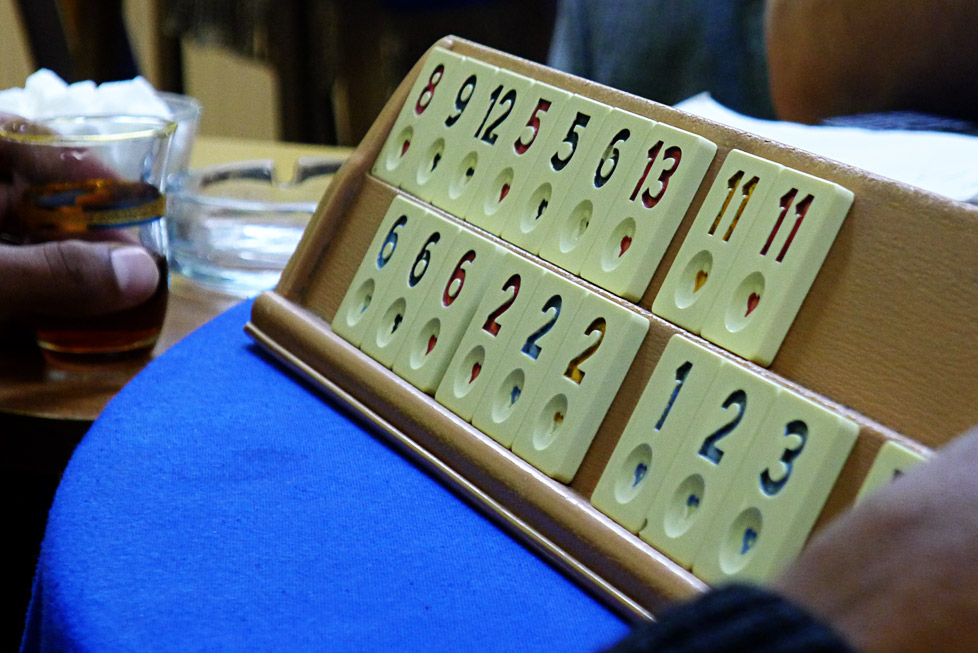
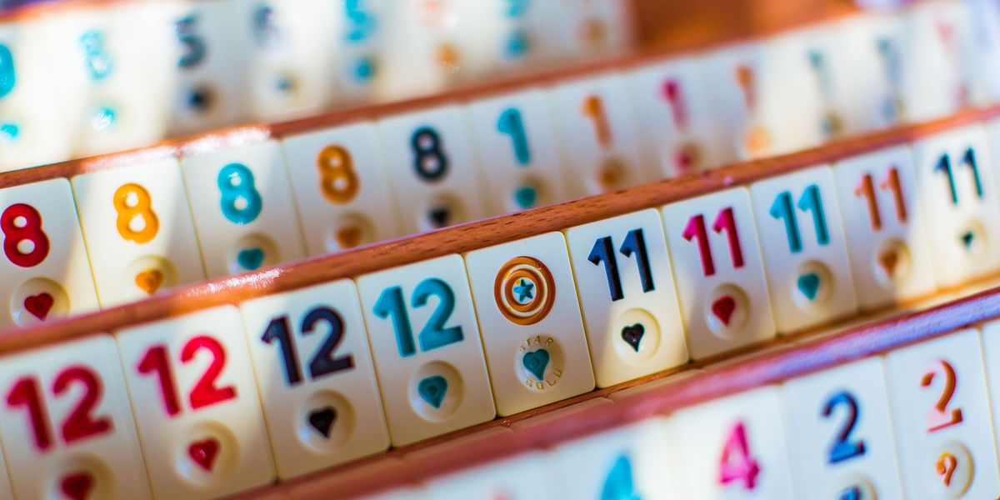

Okey
Il se pratique dans les cafés, comme le tavla, ou bien avec des applications en ligne. Les règles du jeu sont proches de celles du Rummikub et du rami.

Le jeu est composé de 106 tuiles (en bois, en ivoire ou en plastique), soit deux fois quatre séries de 1 à 13 de quatre couleurs chacune, plus deux jokers. Chaque joueur dispose d’un chevalet à deux niveaux pour ranger ses tuiles.
Au début de chaque manche, toutes les tuiles sont retournées, face contre table, et en paquet de 5. Le premier paquet est le seul ayant 6 tuiles. L'ordre des joueurs suit le sens anti-horaire. Le premier joueur lance un dé afin de déterminer un paquet (en déplaçant la 6e tuile flottante), puis le joueur en face de lui relance le dé pour saisir la tuile correspondant au chiffre obtenu (en partant du bas). La tuile choisie est ainsi dévoilée. Cette tuile est celle qui détermine la valeur du joker : les deux tuiles joker prennent donc la valeur : tuile + 1 (si c'est un 13 rouge qui est dévoilée, les tuiles joker deviennent des 1 rouge pour la manche). Et, à l'inverse, les tuiles qui sont marquées de la valeur : tuile + 1 deviennent, eux, les jokers et peuvent servir comme n'importe quel nombre ou couleur.
Ensuite, le premier joueur distribue les paquets de tuiles un à un, en commançant par la personne à sa droite, qui doit avoir finalement 15 tuiles et les autres 14. Les paquets de tuiles restantes constituent la pioche, qui doivent être piochées en suivant le sens anti-horaire toujours. Chaque joueur a, en début de partie, 20 points. S'il y a un joueur qui a la tuile de même valeur que celle qui a été dévoilée, alors il fait perdre 1 point aux autres joueurs en la montrant.

Déroulement d'une manche
Régle de base
Le joueur ayant 15 tuiles débute. Il pose à côté du joueur à sa droite une tuile qu'il ne va pas utiliser. Le joueur suivant prend la tuile, s'il en a besoin, ou pioche une tuile. Puis, il pose à sa droite une tuile, ainsi de suite. Les joueurs peuvent classer sur leurs chevalets les tuiles par : suites de nombres d'une même couleur (minimum 3 tuiles, avec la combinaison 12/13/1 acceptée) - 11 12 13 1 même nombre mais couleurs différentes (minimum 3 tuiles, maximum 4) - 4 4 4 paires de nombre d'une même couleur. Cette combinaison est dure car il ne peut gagner que s'il n'a QUE des paires sur le chevalet - 7 7m.
Le joueur qui n'a plus qu'une seule tuile "solitaire" (n'entrant dans aucune combinaison), quand c'est à son tour de jouer, a gagné. Il doit poser la tuile "solitaire sur la table" et montrer qu'il n'a bien QUE des combinaisons sur son chevalet. Si la tuile est une tuile ayant la valeur du joker (tuile + 1), il fait perdre 4 points à tous les autres joueurs, sinon ils n'en perdent que 2. La partie se finit quand un joueur atteint 0 point.